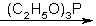

One-Step DMT Synthesisby WizardX [ Back to the Chemistry Archive ] Cyclisation reaction involving nitro- and nitroso- groups with tervalent phosphorus compounds. Reaction with 2-(2-nitrophenyl)-4-dimethylamine butene: (2-NO2)C6H4-C(CH2CH2N(CH3)2)=CH2  DMT 58 %
Reaction with 2-Nitrostyrene: (NO2)C6H4-CH=CH2 Indole
A good starting compound for 2-(2-nitrophenyl)-4-dimethylamine butene would be 2-nitrocinnamic aldehyde. References [1] [reducing agents] Quart. Rev. , Vol 16, pg 208 (1962) |